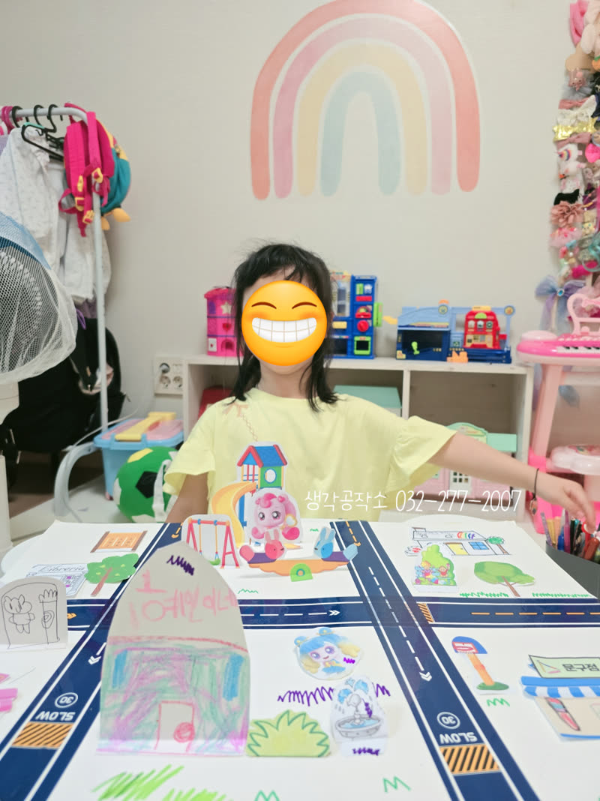
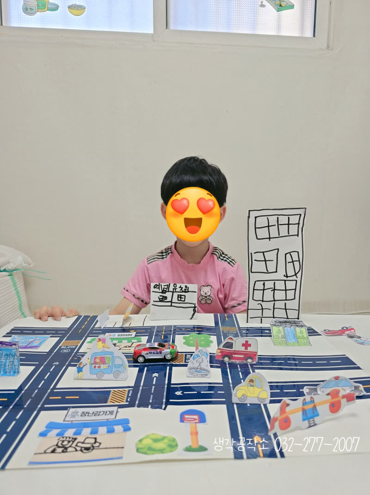
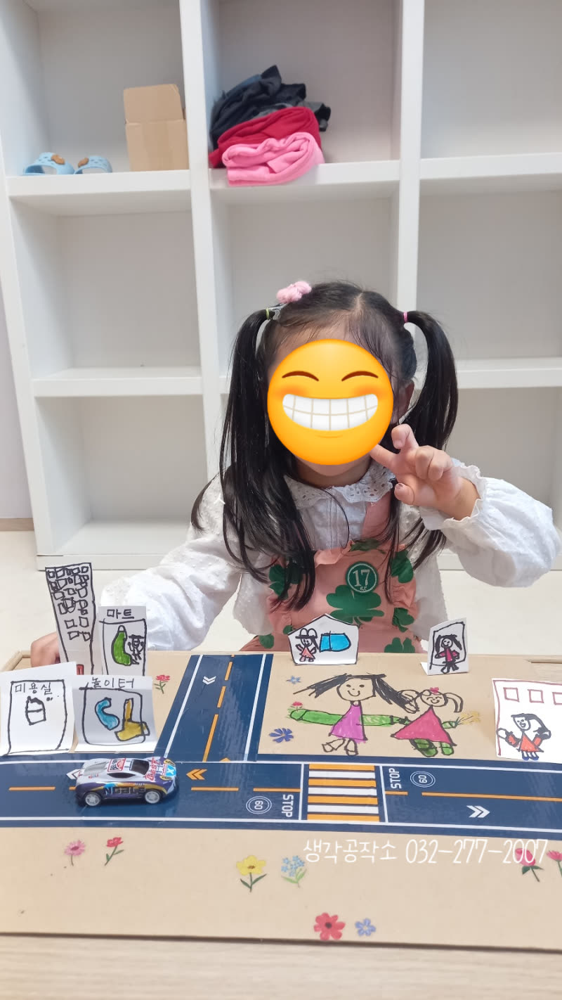
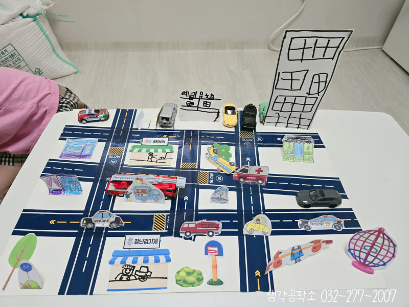
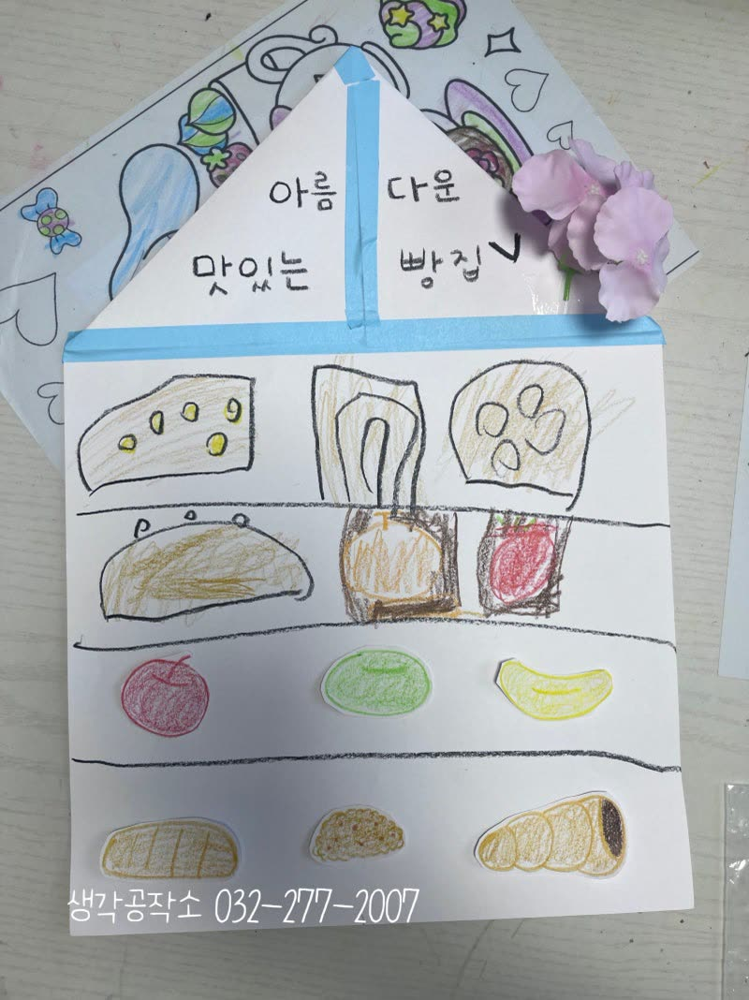
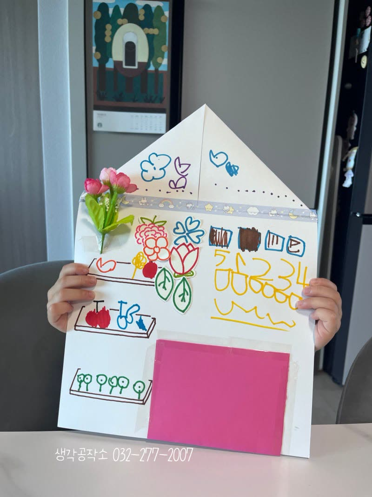
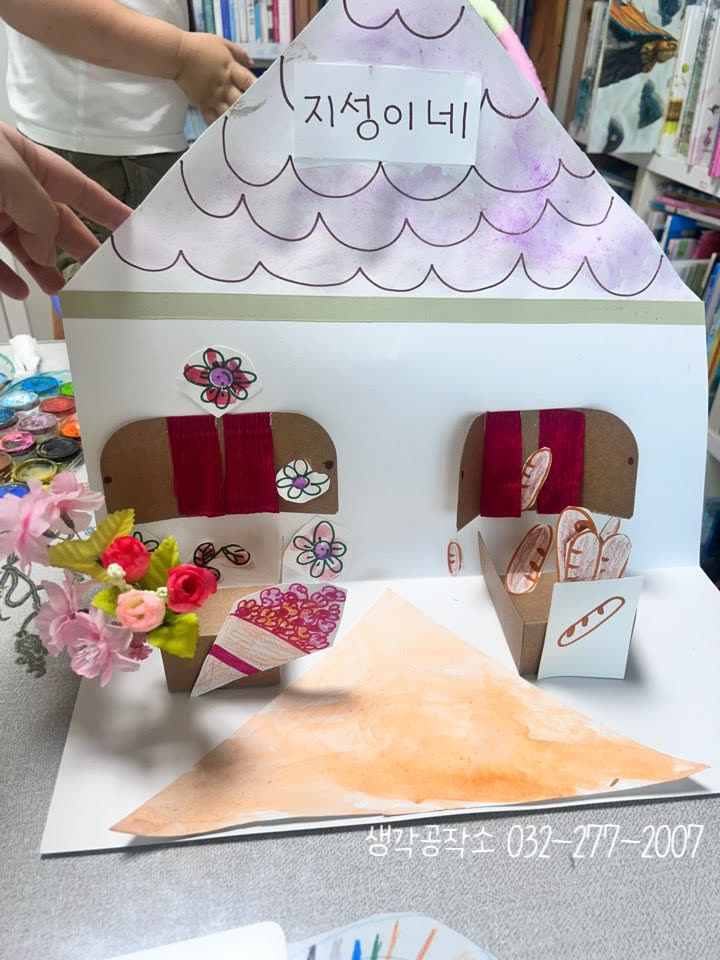

우리 동네 한 바퀴: 아이들과 함께한 소중한 동네 탐험 이야기 🌳🏘️
안녕하세요, 생각공작소입니다. :)
오늘은 아이들과 함께 우리 동네를 탐험하는 특별한 시간을 가졌습니다.
바로 '우리 동네 한 바퀴' 프로그램 입니다! 🏘️
아이들이 자신을 중심으로 주변 세상을 이해하고,
우리 마을의 소중한 구성원임을 느끼는 의미 있는 시간이었답니다.


처음, 아이들에게 '우리 동네를 상상해 볼까?' 하고 물으니,
대부분 공원, 놀이터, 마트, 미용실, 키즈카페 등 자신에게 친숙하고 즐거운 공간들을 이야기했습니다. 🎈
하지만 대화를 이어가면서 아이들은 점차 병원, 은행, 소방서 등
우리 생활에 꼭 필요한 다양한 장소들로 생각을 넓혀갔습니다.
아이들이 마을의 역할과 사회적 관계망에 대해 폭넓게 이해하는 소중한 계기가 되었습니다.
아이들의 사고가 확장되는 모습에 뿌듯함을 느꼈습니다. 😊


특히, 공원에서 경험했던 즐거운 기억들을 떠올리며
그림을 그릴 때는 아이들의 얼굴에 웃음꽃이 활짝 피었습니다.
그네도 그리고, 시소도 그리며 '여기서 친구랑 같이 놀았어요!' 하고
재잘재잘 이야기하는 모습이 정말 사랑스러웠습니다.
아이들의 그림 속에는 생생한 추억과 상상력이 가득 담겨 있었습니다. 🎨✨
횡단보도 앞에서 엄마와 손을 잡고 나누었던 이야기도 빼놓을 수 없습니다.
'빨간불에는 안 돼요! 초록불에 가야 해요!' 하고
다짐하는 아이들의 모습은 어른 못지않게 의젓하고 귀여웠답니다.
작은 약속 하나에도 진지하게 임하는 아이들의 모습에서 책임감을 엿볼 수 있었습니다. 🚦🚶♀️



이번 '우리 동네 한 바퀴' 활동을 통해 아이들은 자신을 둘러싼 환경을 더욱 깊이 이해하고,
우리 마을의 소중한 구성원으로서 소속감을 키울 수 있었습니다 !
친숙한 공간을 넘어 사회의 다양한 기능을 하는 장소들을 인지하며,
공동체 의식을 자연스럽게 배우는 시간이었답니다.
오감쑥쑥 서비스가 우리 아이들의 즐거운 성장에 든든한 밑거름이 되도록,
저희 생각공작소가 아이들의 오감을 깨우는 행복한 경험들을 계속 만들어가겠습니다! 🙌
인천시 남동구, 연수구, 미추홀구, 서구 에 위치한 #심리상담센터 로
전연령층과 전직종을 대상으로 #심리상담 을 도와주는 곳입니다. :)
평생을 미술치료와 심리상담에 종사하신 소장님과
실력과 경험 많은 상담사들이 당신을 기다리고 있습니다.
더욱 자세한 정보는 문의를 통해 확인해주세요 :)
T. 032-277-2007